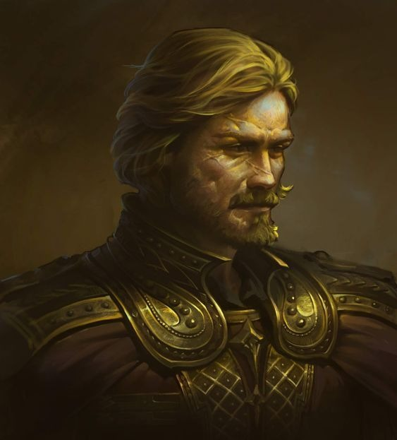

Edward Lambert
| Edward Lambert | Imperial Lieutenant of the Holy Sea, and co-leader of the six beside his younger brother Thibault · Human, House Lambert of the Hallenfeld branch · the Holy Sea of Alabaster · as of Sallowgate in the first snow, about 732 IC |
| Epithet | The Count the Court styled him comes portae, Count of the Gate, the year he took the Sallowgate tariffs at twenty-six, and the Stair heard the other meaning at once and has never stopped hearing it; the clerks of the Archive call him the Second Asking, and the Hammerford companies call him the Auditor, to his face, because he likes it |
| Concept | He asks you twice, and the second time your body has to tell the truth. |
| Stat line | Stage X Realization · Master (Fire) Level 340 · Refined, in Residual Strain, forty past the gate · Rationalis Spirit X Mastered, IV · Fate Studied 25%, II · Lenses: home + 1 · η 0.95 |
| Combat grammar | Blade; the house sword half-sworded, no exchanges, one finish |
| Aura | color: Judicium’s arc-blue gone pale as a winter window, with colored fringes at every edge like a line of text read through a prism, and a thin gold seam of Transference running under it where it touches anything that has changed hands · texture: dry, exact, chequered; the air near him lies in squares · shape: a ruled page; it does not come out from him so much as lay itself down in front of him, column by column · feel: the smell of cold ink and sealing wax, a quiet so complete you can hear a quill on the far side of the room, and the sudden certainty in everyone near him that they have been entered somewhere |
| How he moves | he stands with his hands behind his back and his weight on the outside edges of his feet, and he does not move until he has asked; the right thumb goes on the pad of the index finger, counting; when he fights, the left hand goes halfway up his own blade, the point comes up under the jaw and the hip turns it, never the wrist, and there is one movement and then there is nobody standing in front of him |
| Stack | sustainable Gnosis 3,200 (Forecast 600, Analysis 580), Reflex 440, Finesse 420 and Economy 440, Command 320 and Sovereignty 280; Vitality 780, Ardency 1,240, Resilience 1,240 and Tempering 820; Harmonics 340 · cap two steps on the hidden scale over the sustainable figure · layers: ONE BEFORE’s step of Reflex against a will; SUMMA! for one, SUMMA! and AD SCACCARIUM! together, or QUIETUS! alone, filling the cap |
| Bonded weapon | QUIETUS, the house sword of the Hallenfeld branch, gray and plain |
| Kit | a gilded harness chased in scrollwork and studded at the rim, with a breastplate cut in a lattice like a chequer-cloth, over a coat of oxblood wool; and the piece people talk about first: nothing, because there is nothing on him worth stealing except the harness, which he will price for you to the copper |
| Voice | ”The question, Captain, which you will now be so good as to answer a second time, concerns the forty mules entered on your second return and on your first return not.” · speaker type: a chancery magistrate who has never once raised his voice, because he has never needed to raise anything but a question |
| Next gate | Stage XI, Dissonance · Catalyst: entering contact with a truth capable of ending him and staying whole long enough to choose how to meet it |
I. Identity
| Field | Value |
|---|---|
| Full Name | Edward Lambert |
| Pronunciation | ED-wurd LAM-bert; the Court says Edouard, and he answers to it |
| Alias / Title | The Count · Comes portae, Count of the Gate · Imperial Lieutenant, locumtenens imperii · the Second Asking · the Auditor |
Also Known As
| Name | Who says it |
|---|---|
| The Count | the whole Stair, with both meanings, and the six |
| Comes portae | the Alabaster Court, on paper, and the tariff-hall at Sallowgate |
| the Second Asking | the clerks of the Archive, behind his back, after the house’s interrogation |
| the Auditor | the Hammerford companies, who have had his officers count their spears every summer for twelve years |
| Edouard | the Court, the Palatine and the Lieutenants who are not his brother |
| Ed | Thibault, once, at seven, and never since; Edward has not forgotten it |
| Field | Value |
|---|---|
| Race / Lineage | Human · House Lambert, the Hallenfeld branch, the house’s northern cadet line, which carries the Computus as strongly as Sallowgate and has some gold in the hair · no grip and no eye; a woken Lambert on an ordinary line reads Body I and nothing on the other roads, and his is not ordinary |
| Age | Forty-one |
| Family | father Osbert Lambert, the tariff-master of Hallenfeld, who knelt in chains through the Verdict of Six when Edward was seven and came home; younger brother Thibault Le Lambert, the White Fang, four years behind him; his mother and any wife or child of his own are not on the card |
| Realm / Faction | The Holy Sea of Alabaster · one of the six Imperial Lieutenants, the locumtenentes imperii, who hold the Palatine’s right to command force because a Palatine may not carry a sword · co-leader of the six with his brother · still, by his own insistence, the tariff-master of the Sallowgate gate |
| School and sect rank | the bench at Hallenfeld, at his father’s elbow, from the year he could count; the house sword from eight, every morning, on a wooden copy of its balance · the Accord files him Master, and the house files him as the only Lambert on the list standing at the tenth Stage, which it says no Lambert has passed |
Renown
| Among | What they say of him |
|---|---|
| the public | that he priced the war in the ruins to the copper before it started, and was off by none |
| the army | that he tells a general his numbers before battle in front of his captains and does not soften them, and that he has never once been wrong about the grain |
| the Court | that he is the most courteous man in the Sea, and that nobody has ever lied to him twice |
| the Lambert bench | that he is the best of them since Perrine, and that he asks too many questions for a man who already knows the answers |
| Field | Value |
|---|---|
| Catalyst Event | Woke at twenty-four at the bench beside the oath-stone, when he put the Second Asking to a bargee who had lied once, and watched the man choose to tell the truth knowing it would hang him, and the stone go wet under his feet |
| Refusal | He will not enter a false number |
| Conviction | A true account is the only mercy there is, and a man who is spared the sum is only being robbed of it more slowly |
II. Soul Architecture
| Field | Value |
|---|---|
| Level | 340; it holds Realization (230), and past Level 300 with no Catalyst to Dissonance he is in Residual Strain, forty Levels past the gate: an outlier who keeps his Level with the Strain building, the first five-percent step due at Level 350 |
| Temperance Stage | X, Realization · Master |
| Path | Spirit X Mastered · Fate Studied 25% · the count runs in the Core, and the questions go out on the Fate side; the house’s benchmen tend to the long slow Spirit road, and he walked it to the end |
| Mastery | Spirit IV, Shepherd: the lead, on which the count, the questions and the cloth are paid · Fate II, Drawn: Studied, two rungs behind the lead and capped there; a lifetime of kept counts and a very hard Oath · Body: not walked, and an unwalked Path reads nothing; the Shell opened late and thin and clean, as a woken Lambert’s does, and holds only what the sword needs |
| η | 0.95 through the Core, at Spirit IV, his own figure; through the Shell, on no walked road, about 0.80, his own figure; a pull at Fate II lands about 0.80 of what it costs |
| Lenses | home Judicium + 1 held (Transference), under the Master’s count of three |
| Soul Crystal | Fire |
| Crystal State | Refined, and in Residual Strain |
| Class | Rationalis, the Reckoner · the soul’s name for the officer who keeps the account of an empire · gives: the right of the Second Asking to bind what answers it, and the skill Reading a Return at the roof of his Stage · shapes: his points fall to the eye and the account, and almost none to the body · evolved from: Tally, offered at Glory; Assessor at Refraction; Rationalis at Transcendence; it evolves with his Spirit Mastery |
III. Wellspring Harmonizations
| Wellspring | Folk name | Kind | Depth | Got from | What it bends in him | Note |
|---|---|---|---|---|---|---|
| Judicium | the Scale | Wild | governing | eleven years at the bench beside the oath-stone on the Sounding Walk, under dry air and a clear line of sight | a thing is parted from what it claims to be; a feint is a claim the body makes, and under his asking it comes away from the blow it was hiding | Dazkar · separation · arc-blue with colored fringes · its failure is to tell everything apart at once, and at the end of the road to take the reader’s own memory in the same parting |
| Transference | the Give-and-Take | Fate | deep | the tariff-hall at Sallowgate, where everything that enters the Sea changes hands across his counter | every spend is an exchange, and what one side lays out the other side can be made to take up; the account between two people is a real thing he can move | Sylorin · distillation · a thin gold seam under the blue |
IV. Primary Stats
| Primary | Total | Mean |
|---|---|---|
| Vitality | 780 | 97.5 |
| Ardency | 1,240 | 155 |
| Gnosis | 3,200 | 400 |
| Dexterity | 1,760 | 220 |
| Harmonics | 340 | 42.5 |
| Resilience | 1,240 | 155 |
| Tempering | 820 | 102.5 |
| Dominion (seven, Throne apart) | 1,460 | 208.57 |
| Throne | not opened | · |
| Field | Value |
|---|---|
| Pool | 10,840 |
| Spent | 10,840 |
| Unspent | 0 |
V. Sub-Stats
| Primary | ||||||||
|---|---|---|---|---|---|---|---|---|
| Vitality | Fortitude 180 | Absorption 100 | Constitution 200 | Hemostasis 40 | Regeneration 40 | Filtration 40 | Tolerance 100 | Threshold 80 |
| Ardency | Flux 180 | Alacrity 160 | Depth 100 | Penetration 420 | Compression 260 | Cascade 0 | Overchannel 0 | Density 120 |
| Gnosis | Perception 480 | Acuity 520 | Forecast 600 | Fluency 140 | Retention 380 | Analysis 580 | Cognition 200 | Vigilance 300 |
| Dexterity | Celerity 120 | Reflex 440 | Finesse 420 | Economy 440 | Evasion 80 | Grapple 120 | Feint 0 | Sequence 140 |
| Harmonics | Attunement 60 | Projection 20 | Breadth 20 | Stability 140 | Empathy 40 | Synergy 40 | Axis 20 | Suppression 0 |
| Resilience | Integrity 200 | Ward 180 | Persistence 120 | Anchoring 160 | Fortification 60 | Hardening 20 | Oath 440 | Continuity 60 |
| Tempering | Clarity 260 | Overflow 0 | Maturity 180 | Coherence 220 | Yield 100 | Ceiling 20 | Capacity 40 | Longevity 0 |
| Dominion | Radius 100 | Sovereignty 280 | Sense 200 | Gravity 100 | Pressure 260 | Command 320 | Fate 200 |
Field
Note
Value
An eye and an account with a sword at the end of them. Forecast 600 and Analysis 580, Acuity 520 and Perception 480, and the hand behind them, Reflex 440, Finesse 420, Economy 440 and Penetration 420, for one movement and no second one. Feint is nothing, because he has never in his life offered a false line, and Evasion is low because he does not get out of the way of things he has already counted. The body is a clerk’s body at the tenth Stage: Vitality 780, Hardening 20, Overflow and Overchannel empty. A man who can reach him has hurt him. Nobody has reached him since the ruins.
VI. Force of Hand
| Measure | Figure | Feats | Carried by | Note |
|---|---|---|---|---|
| Strike Force | Penetration 420 | on one point, half-sworded, an inch under the jaw: put QUIETUS through a Moto captain’s gorget and the Moto captain at the Ashbury road | Penetration 420, Compression 260 | delivered at one point, once |
| Lifting | Constitution 200 | none worth the name | Constitution 200, Fortitude 180 | he carries ledgers |
| Travel speed | Celerity 120 | none worth the name | Celerity 120 | he does not arrive early; he is already standing where you were going |
| Reaction | Reflex 440 | stepped out of a crossbow bolt at the Sallowgate counter that was fired before he looked up, because the man who fired it had decided to an hour before | Reflex 440, Forecast 600 | a step higher against any blow with a will behind it, by ONE BEFORE; slower against what has no intent in it |
| Durability | Fortitude 180 | none he wishes to repeat | Fortitude 180, Integrity 200 | a clerk’s body under the gold |
VII. Aether Flow
| Measure | Figure | Note |
|---|---|---|
| EU Reserve | 59,742,033 EU | by the law of reserves at Level 340, about 5.97 × 10⁷ |
| Held as | Essence 85%, Charge 15% | the count lives in the Core; the Shell holds only what the sword needs |
| Flux Density | 600,000 EU/g | |
| AU/s | 570,000 | Flux Density times a yield of 0.95 |
| From full | empties in about 1 minute 45 seconds at full output, Starvation at about 1 minute 34 | nobody has seen him at full output; he asks, and then he strikes once |
| Recovery | ten percent a minute at rest; faster in dry air with a long line of sight, and faster still at the Sallowgate counter, where the cloth has set into the floor | Judicium’s ground, and his own |
Spending tells
| Reserve left | What shows |
|---|---|
| half | the colored fringes go off his aura one after another, red first, and the thumb on his index finger speeds up |
| a quarter | his sentences get shorter, and he begins to count under his breath: stores, names, numbers, where another man would say what he feels |
| a tenth | the chequer in the air near him slips out of square, and the fine scars on his face show white |
| past that | the count in him starts to report everything at once, every object in view telling him what it is made of, and he cannot put any of it first; he has to close his eyes to stand up |
VIII. Traits
Full accounts: Edward Lambert — Abilities
Every Trait reads at his lead Mastery, Spirit IV.
| Trait | Kind | Source | Path and Form | Gates | What it does | Limit | Tell | Cost | Counter | Numbers |
|---|---|---|---|---|---|---|---|---|---|---|
| ONE BEFORE | Inherited | Inherited, House Lambert | Spirit · the Computus, no Wellspring · Read | none | The Computus in the body: against a blow with a will behind it, his Reflex reads a step high on the hidden scale, and he is standing where the blow is not before it begins. | slower against anything with no intent in it: a falling wall, a panicked beast, a working that runs by itself | none to the eye; the thumb on the index finger | nothing in reserve; the house’s bill is the count that never stops | do something no one has done; strike with no thought at all | Reflex 440, a step higher against a will |
| SUMMA | Primary | Taught, then Lived | Spirit · Judicium · Read | Stage VIII | The house’s Sum at the tenth Stage: a whole field read at once, every man, horse and day of grain, and a false return feels heavy in his hand like a cased weight. His Forecast and Analysis read a step high while he counts. | as far as the eye and the reports go; a field unseen is a hole in the sum, and so is anything nobody has ever done | his eyes go out of focus and check over your shoulder for how many came with you | nothing while he only reads; held past an hour, a headache like a nail behind the eye | a false report he has no way to check; fog; a room caged in iron | to the horizon, in dry air |
| THE STRUCK LIST | Secondary | Lived | Fate · a kept count · Bind | none | He has never entered a false number, and the Lambert count runs through him clean. Any oath sworn to him, or contract countersigned by him, holds against chance while it is true, and gives at the first false line in it. | it holds only what is true; a false line in an oath he took is a crack in everything he holds | he signs with his left hand, always, so the right thumb can keep counting | the whole house stands on his column; one false entry spreads | prove a line in the contract false | Fate II, Oath 440 |
IX. Skills and Abilities
Full accounts: Edward Lambert — Abilities
Skills
| Skill | Cues / mechanics | Learned where | Priced by (Sub-Stats) | Mark | Rank |
|---|---|---|---|---|---|
| The house sword | gray and plain; the left hand halfway up the blade, the point up under the jaw, the hip turning it; no exchanges, one finish | the yard at Hallenfeld, from eight, on a wooden copy of its balance | Finesse, Penetration | Mastered | Master |
| Reading a Return | a ledger, a manifest, a muster roll, a man’s face across a counter; the line that does not add | his father’s bench | Analysis, Acuity | Mastered | Master |
| The Second Asking | the house interrogation, asked twice with the weight of the list behind it | Hallenfeld, then the oath-stone | Command, Acuity | Mastered | Master |
| Tariffs and the gate | what everything entering the Sea is worth, what it is declared as, and the difference | Sallowgate, since twenty-six | Retention, Analysis | Mastered | Master |
| Court Latin and the chancery | the Court’s tongue, written and spoken, the main verb at the end | the Archive at Alabaster | Fluency, Retention | Mastered | Expert |
| Pricing a war | grain, remounts, days, wages, the dead | the ruins | Forecast, Command | Mastered | Master |
Techniques
| Technique | Kind | Mark | Source | Path and Form | Gates | What it does | Limit | Tell | Cost | Counter | Numbers |
|---|---|---|---|---|---|---|---|---|---|---|---|
| ITERUM | Signature Art | Mastered | Lived | Spirit · Judicium, with Transference at the close · Read, landing through Strike | none | the power to ask a thing twice, so that whatever answered false the first time must answer true the second | it needs a first answer to work on, and something with a will to give it; a thing with no intent never lies and never tells him anything | the thumb stops on the index finger | from a fiftieth of his reserve for one question to about 6% for a warrant broken | answer true the first time; say nothing; do something no one has done | see the moves below |
| QUAERO! | Signature Technique | Mastered | Lived | Spirit · Judicium · Read | ONE BEFORE | ”Quaero.” The first asking: he gives an opponent an opening as plain as a door, and reads what the body answers with. Every feint thrown at it is entered as a lie, and he can see the true blow under it, parted from the false one by a fringe of color. | one opponent; one exchange; it costs him the opening, which is real | the blade dips and the hands go wide, like a clerk offering a ledger | about 2% of his reserve, near 1.2 million EU | a man who answers the open door with an honest blow, which he must then meet honestly | parts one feint a breath |
| REDDE RATIONEM! | Signature Technique | Mastered | Lived | Spirit · Transference on Judicium · Strike | QUAERO! | ”Redde rationem.” The second asking, and the account closed: everything the opponent spent on the lies QUAERO! entered changes hands and goes onto his point, and he takes the one finish, half-sworded, up under the jaw, with the whole price of the other man’s feints behind it. | only what was spent on a lie he has read; an honest fighter pays nothing into it, and gets an honest thrust | the left hand goes halfway up the blade | about 4% of his reserve, near 2.4 million EU | never feint him; or kill him in the opening he offers, which is real | the more a man lies, the harder it lands |
| QUO WARRANTO? | Technique | Drilled | Lived | Fate · Judicium · Pull | Stage IX | ”Quo warranto?” By what warrant? He asks it of a working, an oath, a title or an authority, and reads what it stands on; if it stands on a lie, the lie comes away from it in front of everyone, and whatever rested on the lie gives. | it breaks only what is false; a true warrant answers him and stands, and he has spent the cost for nothing; at Fate II the pull is only a lean, held, so it needs the lie read whole first | arc-blue lines cross his eyes, and the thing he is looking at shows its fringe | about 6% of his reserve, near 3.6 million EU, and every time, a fine line opens in his own face | a true warrant; a lie with no one standing on it | used on the record eleven times |
| CUI BONO? | Technique | Mastered | Lived | Fate · Transference · Read | none | ”Cui bono?” Who profits? He lays a hand on anything that has changed hands, a coin, a letter, a working that has been spent, and reads along the exchange to whoever gained by it. | one exchange at a time; a thing given with no gain in it leaves no road | gold threads under his fingertips | about 1% of his reserve, near 600,000 EU | a gift; or a chain of hands long enough that the gain is spent before he reaches the end | as far as the exchange runs |
Releases
| Release | Kind | Mark | Source | Path and Form | Gates | What it does | Limit | Tell | Cost | Counter | Numbers |
|---|---|---|---|---|---|---|---|---|---|---|---|
| SUMMA! | First Release | Mastered | Lived | Spirit · Judicium · Shape | Stage IV | ”Summa.” The house’s Sum becomes his body: the fringes come up on his aura in full color, and his Gnosis and Dexterity read a step high on the hidden scale, no Sub-Stat past the roof of his Stage. | it is the field, read all at once, and it is loud | every colored fringe in the room shows at once | about 60,000 EU a second, near 16 minutes from a full reserve | heat, smoke, fog, anything that takes the line of sight | +1 step Gnosis and Dexterity |
| AD SCACCARIUM! | Second Release | Mastered | Lived | Spirit · Transference · Shape | Stage VII | ”Ad scaccarium.” To the Exchequer: the cloth goes down, and THE EXCHEQUER opens around him. With SUMMA! under it, his Gnosis and Dexterity stand two steps over his line. | it fills the cap with the First | the floor goes white and ink-black in squares | about 90,000 EU a second; with SUMMA! under it, 150,000, near 6 minutes 40 from a full reserve | anything that breaks the Domain | +2 steps with the First |
| QUIETUS! | First Release, its last stage: SUMMA! narrowed to one man (a Spirit soul holds two Releases) | Drilled | Lived | Spirit · Judicium · Shape | Stage IX | ”Quietus.” The account closes on one man. The whole field drops out of his count, which for a Lambert is a terror, and the Computus goes onto that one man alone: Forecast, Analysis and Reflex read two steps high against him and nobody else. | he is blind to everyone else in the field for as long as it holds; a second man with a knife has him | the thumb stops, and he looks at one man as if the room were empty | about 240,000 EU a second, near 4 minutes from a full reserve | a second fighter; anyone he has stopped counting | fills the cap alone |
| THE EXCHEQUER | Domain | Mastered | Lived | Spirit · Transference, read by Judicium · Shape | Stage VIII | Its law: every spend is entered. Inside it the ground becomes a chequered cloth of white and ink-black, and every working, every draw on a reserve and every feint lays a counter on the cloth where anyone can read it; he reads it first. At his word the account is struck: whoever has spent more than he holds is in arrears, and pays the difference out of the body. | a plain blade with no will spent through it lays no counter; it needs the spend to be a spend | counters of bone and jet on the squares, clicking | opened by AD SCACCARIUM! | another Domain whose law will not be counted; an honest swordsman with no working at all | the tariff-hall’s floor at Sallowgate has kept the squares since Realization |
X. Spirit Axes
| Person | Bond | Axis weight | What flows across it | Note |
|---|---|---|---|---|
| Thibault Le Lambert | his younger brother, the White Fang | heaviest | Edward asks and Thibault answers; it has worked that way since they were boys at Hallenfeld | he is the only man alive who can begin something for Thibault, and Thibault is the only man alive he cannot audit |
| Osbert Lambert | his father | heavy | the count the boy took down at the kitchen table, everything his father told him about the north, in order | |
| the six | the Imperial Lieutenants | moderate | the charter he wrote | |
| Léonard Lambert | Warlord of the Lamberts | light | the house, and the polite argument about whose sword the Sea’s sword is | he sits below Léonard at the Sea’s table and has never once let Léonard see him count |
Crew
the Sallowgate bench
Earned by
the clerks of the tariff-hall, white wool and an inked cuff
What it shows
they have never once been told to falsify a return, and they would know
XI. Resistances
| Against | Resistance | Carried by | Note |
|---|---|---|---|
| A lie | very high | Judicium, the Computus, Analysis 580 | nobody has lied to him twice |
| A blow with a will behind it | very high | ONE BEFORE, Reflex 440 | he is not there |
| Mind-work | high | Ward 180, Clarity 260, the count | the count is too busy to be talked to |
| A blow with no will behind it | poor | · | a falling wall gives the Computus nothing |
| Anything that reaches him | poor | Vitality 780, Hardening 20 | a clerk’s body |
| Fog, smoke, iron rooms | poor | · | Judicium hates them |
XII. Physical Description
| Feature | Description |
|---|---|
| Build | tall and well made, broad enough through the shoulder to carry the harness, lean under it, with the open hands kept low and the weight on the outside edges of his feet |
| Hair | dark gold, the main-branch gold the house has married into Hallenfeld, worn thick and swept back from the brow to the nape, a little long at the collar, the way a man wears it who has not had time to think about it since the ruins |
| Face and eyes | a long, strong face, high in the cheekbone, with a straight nose and a heavy brow; a short close beard the color of his hair, and a mustache he keeps waxed out to two fine points, the one vanity anyone has ever caught him in; the eyes are pale, and they check over your shoulder for how many came with you before they come back to you |
| Marks and scars | a net of fine pale scars across the brow, the cheekbones and the bridge of the nose, crazed like the glaze on an old cup: one opens for every warrant he breaks, and there are eleven |
| The thumb | the right thumb moving on the pad of the index finger, always; in the family this is breathing |
| The harness | a gilded plate harness of his own, distinct from the Warlord’s Bear Harness on purpose: rounded pauldrons chased with raised scrolls and studded round the rim, a high gilded collar, and a breastplate cut in a lattice of diamonds like the chequer-cloth of the Exchequer, over a coat of oxblood wool, the Lieutenants’ crimson gone dark |
| The gate coat | at the tariff-hall he wears the bench’s plain white wool with an inked cuff, like every clerk at the counter, and an iron ring cut with the balance |
XIII. Psychology
| Field | Value |
|---|---|
| Core Wound | His father came home from the Verdict of Six and counted for the rest of his life, and Edward has never found out what the last figure he gave in that hall cost him to give |
| Flaw | He believes the true account is a mercy, and he will hand it to people who did not ask for it and cannot bear it |
| Desire | That the war be priced right |
| Strength | He cannot be lied to, and he will not lie to you about the number |
| Loop | ask, ask again, close the account, go back to the tariffs |
| Foil | his brother, who cannot ask anything, and answers everything |
| Stress Default | shorter sentences, then counting aloud |
Voice block
| Field | Value |
|---|---|
| Speaker type | a chancery magistrate who has never once raised his voice, because he has never needed to raise anything but a question |
| Notices first | how many came with you, and what your boots cost |
| Speech length | long, courteous, chancery sentences with the main verb at the end and a short true number in the middle |
| Wit | dry to the bone, and mostly in the subordinate clause |
| Accent features | chancery syntax, the main verb late; Court Latin abstractions without anxiety, because he has nothing to prove; says the inscription; under load his sentences get shorter rather than warmer |
| House words and sayings | Count True · “Iterum” · “Entered” |
| Oaths | ”by the bench”; per Dazkar when he means it |
| Contractions | never |
| Pet phrase | ”I ask again.” |
| Never says | ”about” |
| Stress shift | the sentences shorten, and the thumb speeds up |
| Grief shift | he counts aloud: stores, names, numbers, where another man would say what he feels |
| Sample line | ”The question, Captain, which you will now be so good as to answer a second time, concerns the forty mules entered on your second return and on your first return not.” |
XIV. Equipment
| Item | What it is | Grade | Rarity | Rung | Bonded | Multipliers | Shell draw |
|---|---|---|---|---|---|---|---|
| QUIETUS | the house sword of the Hallenfeld branch, gray and plain | A | Very Rare | Fieldwinner | yes | Penetration ×1.10 | light |
| The gilded harness | Lieutenant’s plate, Sallowgate make | B | Very Rare | Siegepiece | no | Fortitude ×1.10 | light |
| The balance ring | iron, cut with the balance | plain | Common | · | no | none | none |
| The gate coat | white wool, inked cuff | plain | Common | · | no | none | none |
| Item | Item Tier and stamp | Look | Maker’s mark | Wear and repairs | How it is shown off | What people say | Price |
|---|---|---|---|---|---|---|---|
| QUIETUS | Hallowed | gray steel, plain cross, a leather grip worn to the shape of two hands, one of them on the blade | none; the branch has carried it since Hallenfeld was a toll-post | the ricasso polished bright where the left hand goes | it is not; it stays in its scabbard until there is one movement left | that the Exchequer clerks named it, for the word they write when an account is quit, and that he did not object | not for sale; he has priced it anyway, and the figure is in the house book |
| The gilded harness | Instrument | gold over steel, scroll-chased pauldrons, a lattice breastplate | the Sallowgate armorers’ balance | every rivet accounted for; three replaced after the Ashbury road | at the Court, on purpose, so the six can count him | that he wears the Exchequer on his chest; he says it is cheaper than a banner | to the copper, if you ask |
| The balance ring | Plain | an iron ring cut with the balance | the bench | the cut worn shallow | at the counter | that he wears a clerk’s ring under a Lieutenant’s gauntlet | three coppers |
XV. Temperance Record
Level log
| Levels | Where they were earned |
|---|---|
| 1 to 24 | unwoken, the Computus eating the Core: the bench at Hallenfeld, the Archive at Alabaster, the oath-stone on the Sounding Walk |
| 24 to 120 | woken at the oath-stone; the Sallowgate tariff-hall from twenty-six; the last years before the split |
| 120 to 260 | the ruins after the continents split: the Hammerford audits, the grain, the Ashbury road, the charter of the six |
| 260 to 340 | co-leader of the Lieutenants; the war priced; Realization at the Sallowgate counter |
Stage ledger
| Stage | Name | Catalyst | Bought | The story in a line |
|---|---|---|---|---|
| I to III | Murmuring to Ascension | crisis | no | woke at twenty-four as the bargee told the truth and the stone went wet, and built QUAERO! from the house’s Second Asking by himself inside a year |
| IV to VI | Flourishing to Glory | crisis | no | the axis to his brother set; SUMMA! found at the tariff-hall; at Glory, a soul-cost taken to keep a true account, and the class Tally |
| VII | Refraction | crisis | no | QUO WARRANTO? pushed past reading into judgment for the first time, and the parting ran back into his own face; AD SCACCARIUM! first lit the cloth’s seed; the class Assessor |
| VIII | Transcendence | crisis | no | the contradiction in his record resolved: he stopped thinking of mercy and the sum as two things; the first true Domain, and the class Rationalis |
| IX | Invocation | crisis | no | Dazkar’s Scale called on as co-author, in the Court, over the charter; QUIETUS! |
| X | Realization | crisis | no | the charter of the six entered and the world answered: the floor of the Sallowgate tariff-hall set into the Exchequer’s squares and has kept them |
XVI. Fracture Log
| Event | Layer | Status | What it left |
|---|---|---|---|
| The crazing | Shell | open | a fine scar for every warrant he breaks; eleven so far |
| Past the gate | Core | open | Level 340 at the tenth Stage; Residual Strain building, the first step at 350 |
Lore
Full account: Edward Lambert — Lore
Ties
| Person | Who they are to him |
|---|---|
| Thibault Le Lambert | his younger brother, the White Fang; Edward asks, and Thibault answers |
| Osbert Lambert | his father, the tariff-master of Hallenfeld, who came home from the Verdict of Six |
| Léonard Lambert | Warlord of the Lamberts, above him at the Sea’s table |
| the other four Imperial Lieutenants | the six, of whom he and Thibault are the two who lead |
| Gerrit Marrick | the Captain of the Long Spear, whose spears his officers count every summer, and whose clause asking for the Veil-Saint by name Edward countersigned |
| Cozbi Mahuo | the master of the Sum-gol post, who brought a princess to the table; Edward sent him a keeper |
| Mizuyi Moto | the princess at Sum-gol, entered in his book as a hostage of the alliance, and his brother’s charge |
| Maud Corwen | Warden of the Wellheads, whom he has asked twice what the Wellheads will charge the south for the war |